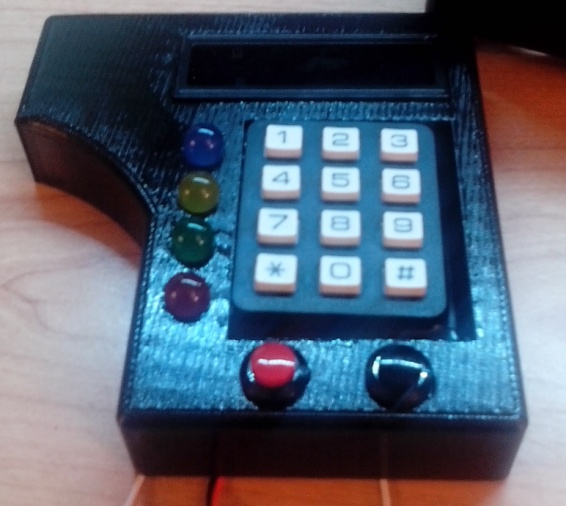
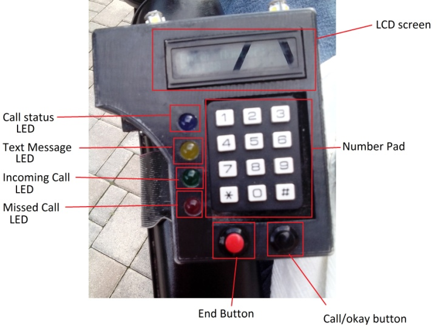
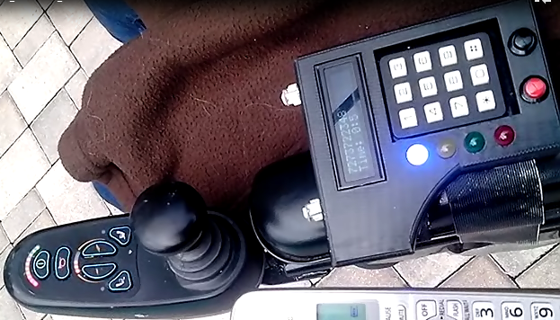

|
Wheelchair Phone
-------------------------------------------------------
Problem
People who are disabled and are wheelchair bound sometimes have limited use of their hands. This can be caused by a variety of conditions such as a stroke which could render half of a person’s body unmovable. Other conditions can include multiple sclerosis (MS), Amyotrophic lateral sclerosis (ALS), and Parkinson’s disease which all can cause lack of coordination, shaking, or loss of movement. Many of these people are incapable of using a cell phone for a variety of reasons. Flip phones are not a viable solution mainly because of the small buttons and the requirement of opening the phone to use it. This can become a difficult task for someone who has limited use of their hands. Smart phones are also not good because it requires great dexterity to operate the touch screen. In addition smart phones can be very complicated because of the operating systems’ sophistication. Furthermore, small cell phones can easily be misplaced and need to be charged every night. Chargers can also be difficult for a disabled person to use because of the small plugs.
Current solutions
Currently disabled people either use a landline, which usually has a large handset and can only be used at home, or make use of a cell phone to the best of their abilities. Some smart phones support voice commands to navigate the operating system but this can at times be cumbersome and inaccurate. Today many new cars have smart phones embedded and enabled in them for use. The same should be done for wheelchairs as people are in their wheelchairs longer than most people are in the cars.
Solution
The solution to this problem is the wheelchair phone. The wheelchair phone is capable of everything a cell phone is capable of. It can make and receive calls, receive text messages, send generic pre-programmed text messages, and has a voicemail system. It also has extra functions such as speaker phone, a clock, a magnetic compass, a temperature sensor, and a light sensor. These sensors can be used to help the user navigate by showing the magnetic heading as well as have the phone maintain autonomous systems. One of these systems includes automated light control. The phone has LED lights on it to illuminate the way when a disabled person is in the dark; this is controlled with the light sensor. The phone is mounted to the wheelchair with a hinge so that it can be flipped up if the user wants to get out of their wheelchair and fold down so that they can easily use it with one hand. The phone plugs into the electric wheelchair’s charger port and powers its self off of Figure 1: Phone in development the electric wheelchair’s battery. The phone uses 1% of the batteries total energy in a 12 hour period. This allows the phone to never need to be “charged.” The phone also has speed dials programmed in so that the user only has to press the speed dial number and then the call button. Routines can also be programmed in to enter information automatically into call based information retrieval. For example a speed dial for the bank is added and the phone will automatically enter in the card information to request the balance of the bank account and the user doesn’t have to press any additional buttons. The phone is completely portable and uses a SIM card to connect to cell networks. The disabled person can use their phone anywhere there is cell service.
References:
http://www.nationalmssociety.org/
http://www.pdf.org/about_pd
http://www.forbes.com/sites/toddhixon/2014/03/11/potholes-in-the-road-to-phone-car-integration/
  
Text and Images © 2015 Frank Magazu.